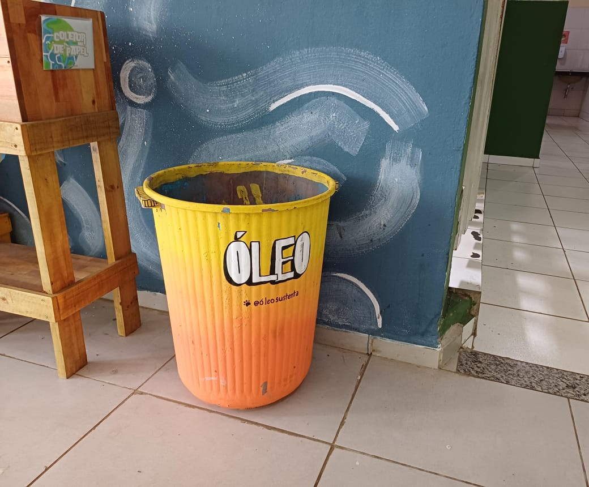
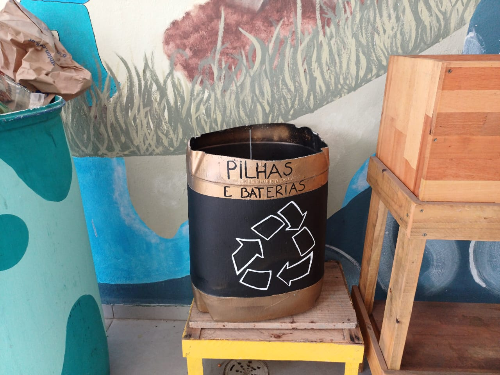
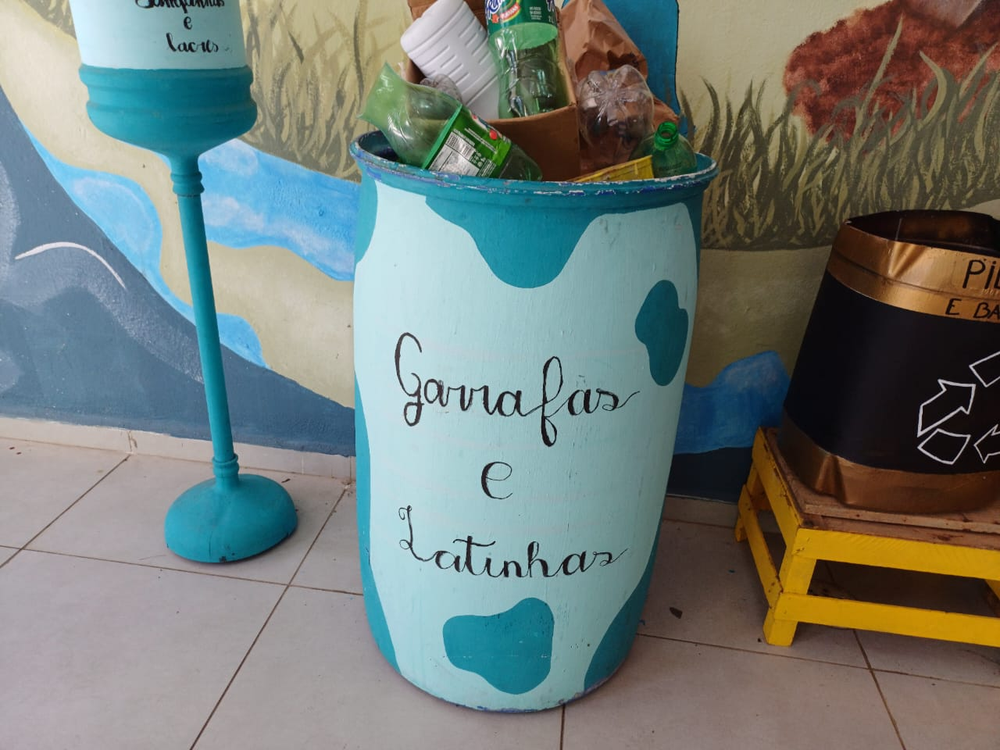
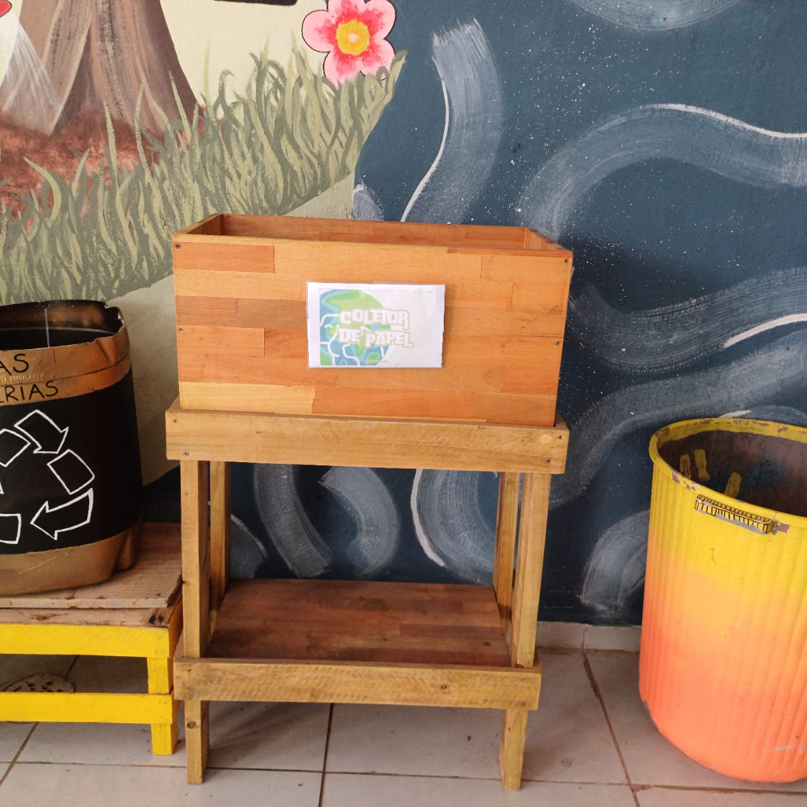
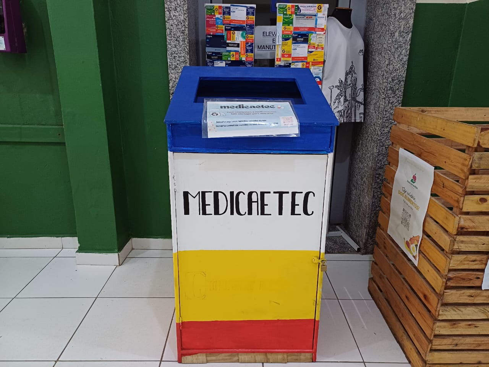

Coleta de Óleo
• Quem criou?
Criado e organizado pelo professor Julio.
• Como funciona?
Você pode trazer o óleo em uma garrafa em qualquer dia do ano e deixar no ponto de coleta que fica perto da secretaria.
• Qual o objetivo?
É de evitar o descarte indevido do óleo, já que foi observado que normalmente as pessoas não sabem o que fazer com o óleo usado e acabam descartando de qualquer jeito, e de arrecadar dinheiro para o cão domínio.
• Como podemos ajudar?
Doando o óleo para a escola ao invés de fazer o descarte indevido deste item.

Coleta de pilhas
• Quem criou?
Professor Júlio junto com alguns alunos.
• Como funciona?
Dentro da escola, pode ser doado na secretaria, na parede central, aonde se é pego todo o material e é dado um fim apropriado. As principais etapas da destinação final de pilhas e baterias envolvem: coleta seletiva, tratamento e reciclagem e a disposição final segura.
• Qual o objetivo?
Muitas pessoas costumam descartar pilhas e baterias juntamente do lixo comum, fazendo, assim, o descarte indevido desse tipo de resíduo. Esta ação inadequada resulta em um meio ambiente muito prejudicado e é exatamente isso que este projeto quer combater. O objetivo desta coleta, é o de amenizar o impacto ambiental dos descartes indevido desses itens, e conscientizar as pessoas sobre isso.
• Como podemos ajudar?
Não descartando esse tipo de lixo junto com o comum, e doar este tipo de item para a secretaria da escola, aonde estes resíduos serão corretamente descartados.

Coleta de Garrafas e Latinhas
• Quem criou?
Foi criado pelos mesmos alunos que tiveram a ideia do cão domínio.
• Como funciona?
É coletado este material nos pontos de reciclagem da escola, localizado próximo ao refeitório, e então, após a coleta e separação devida, é levado a cooperativa de reciclagem aonde é vendido este material e , com isso, se dá um destino adequado a eles. A grande maioria do dinheiro arrecadado vai para o cão domínio.
• Qual o objetivo?
Além da coleta de ração, como já mencionado, vale à pena falar sobre o impacto ambiental, visto que, por mês, é coletado aproximadamente 15kg de material, que são vendidos e têm uma destinação final apropriada. Se esta coleta não acontecesse, todo esse material seria incorretamente descartado.
• Como podemos ajudar?
Doando/vendendo este material para algum lugar onde o mesmo possa ter um destino mais apropriado.

Coleta de Papel
• Quem criou?
Professor Júlio junto com alguns alunos.
• Como funciona?
O coletor de papel se encontra na secretaria da escola e pode-se ser doado todo tipo de papel, dede sulfite usado até papéis mais grossos.
• Qual o objetivo?
O papel coletado, por mais que não pareça, tem um valor agregado bastante satisfatório, sendo, portanto, vantajoso para o cão domínio e importante para o meio ambiente por causa da reciclagem.
• Como podemos ajudar?
Doando/reciclando quaisquer tipo de papel.
>

Coleta de Remédio
• Quem criou?
A própria escola criou e organiza a coleta.
• Como funciona?
A escola conta ao lado da secretaria com um ponto de coleta que se mantém aberto somente para descarte dos mesmos por segurança. Os próprios alunos chegam a descartar estes medicamentos que, ou estão vencidos, sendo portanto impróprio para consumo, ou que não sejam mais usados.
• Qual o objetivo?
É o de destinar medicamentos que já não tem mais utilidade para um centro de coleta mais adequado, e prevenir o descarte impróprio destes itens, que fazem que o meio ambiente seja prejudicado.
• Como podemos ajudar?
Fazendo o descarte adequado destes medicamentos ao invés de jogar juntamente com o lixo normal. Este tipo de resíduo é muito perigoso para o meio ambiente e por isso que temos uma atenção redobrada por ele.